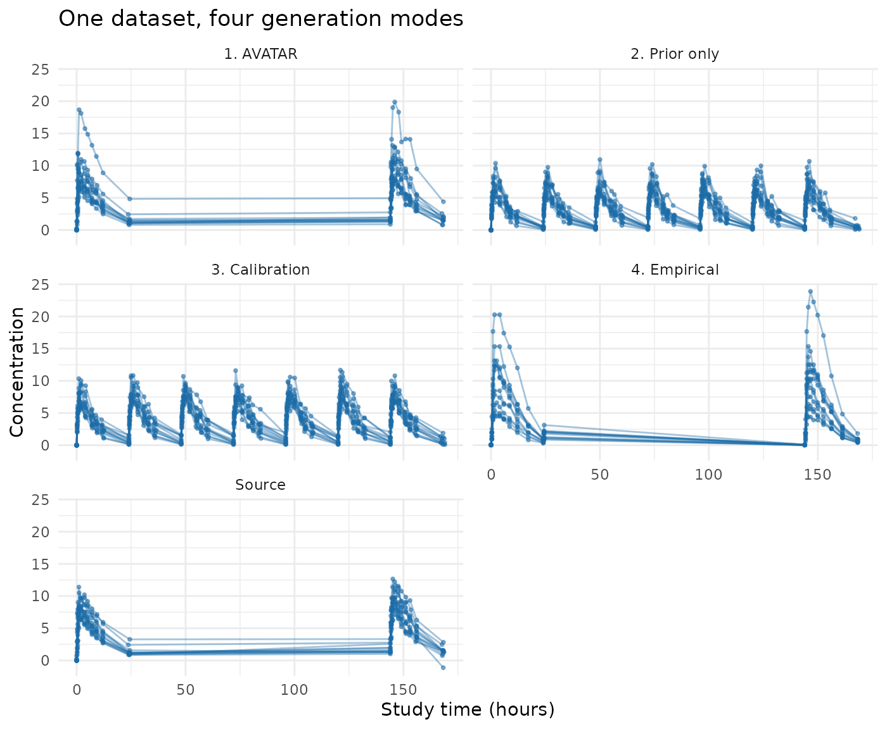

What this package does
synpmx builds synthetic pharmacometric (PMX) datasets:
dosing and measurement event tables with the same schema, event grammar,
and rough behavior as a real study, so that data-assembly code,
diagnostic plots, and model-run plumbing can be developed outside the
restricted environment that holds the real data.
That narrow purpose is important. A generated dataset is not anonymous data and is not evidence that source subjects cannot be re-identified. It is also not suitable for estimation, model selection, inference, dose selection, or clinical decisions. The method aims for structural usefulness, not scientific equivalence.
The hard part is not making numbers. It is deciding how much of the real data is allowed to survive into the synthetic data, which is a privacy question before it is a technical one. This package therefore offers four generation modes at different points on that scale. This vignette introduces all four and applies each one to the same public dataset.
The four modes, from most faithful to most protective:
- AVATAR blending — build each synthetic subject out of real subjects.
- Prior only — read no data at all; simulate from a public model.
- Calibration — simulate from a public model whose magnitude is corrected by a small, differentially private release.
- Empirical — release a dense set of differentially private summaries and rebuild subjects from them.
Modes 2, 3, and 4 all use differential privacy (DP) accounting, and mode 2 is its trivial limit: spending nothing.
This vignette stays at the level of what each mode does and when to use it. The full AVATAR algorithm — every step, the mathematics, the edge cases, and a worked example — is in the AVATAR mathematics article.
The example: theophylline
theo_md (from nlmixr2data) is a small
public dataset — 12 subjects, seven daily 320 mg oral doses, one
concentration endpoint. Twelve subjects is a deliberately hard case: it
is typical of early-phase work and it is where the differences between
the four modes are most visible.
data("theo_md", package = "nlmixr2data")
theo_roles <- pmx_roles(
id = "ID", time = "TIME", dv = "DV", amt = "AMT",
evid = "EVID", cmt = "CMT", covariates = "WT"
)
str(theo_md)
#> 'data.frame': 348 obs. of 7 variables:
#> $ ID : int 1 1 1 1 1 1 1 1 1 1 ...
#> $ TIME: num 0 0 0.25 0.57 1.12 2.02 3.82 5.1 7.03 9.05 ...
#> $ DV : num 0 0.74 2.84 6.57 10.5 9.66 8.58 8.36 7.47 6.89 ...
#> $ AMT : num 320 0 0 0 0 ...
#> $ EVID: int 101 0 0 0 0 0 0 0 0 0 ...
#> $ CMT : int 1 2 2 2 2 2 2 2 2 2 ...
#> $ WT : num 79.6 79.6 79.6 79.6 79.6 79.6 79.6 79.6 79.6 79.6 ...Mode 1: AVATAR blending
Start here, because it is the least work.
synthesize_pmx() needs nothing but the data and a
declaration of what the columns mean. For each synthetic subject it
copies a real subject’s event skeleton, then fills the covariates and
concentrations with a distance-weighted blend of that subject’s nearest
compatible neighbors, plus noise.
avatar <- suppressWarnings(synthesize_pmx(theo_md, theo_roles, seed = 101))
validate_pmx(avatar, theo_roles)$valid
#> [1] TRUENothing was elicited, nothing was assumed, and the output keeps the
source schema and cohort size. On a 12-subject dataset
synthesize_pmx() also emits documented small-group fallback
warnings (some event-pattern groups have only one usable donor); they
are suppressed above and explained in the AVATAR
mathematics article.
What you cannot say about this output is that it is anonymous. It is assembled from real trajectories, so it belongs inside the trusted environment that the source data came from.
Mode 2: prior only
The opposite extreme. Declare a public structural model and a public
protocol, and simulate. No confidential data is read, so there is
nothing to protect and no budget to spend: this is
epsilon = 0, the strongest possible guarantee.
The typical parameter values must come from somewhere that is not the data — allometric scaling from preclinical work, a published model for the compound class, or the reasoning that set the starting dose.
theo_model <- pmx_structural_model(
pk = "1cmt_oral",
typical = c(cl = 6, v = 35, ka = 1.5), # deliberately imperfect
source = "illustrative allometric scaling; never fitted to theo_md"
)
theo_design <- pmx_trial_design(
dose_levels = 320, cohort_sizes = 12,
sampling = c(0, 0.25, 0.5, 1, 2, 4, 7, 9, 12, 24),
n_doses = 7, dose_interval = 24,
source = "illustrative protocol"
)
prior_only <- pmx_generate(theo_model, theo_design, n_subjects = 12, seed = 202)
head(prior_only, 3)
#> ID TIME NTIME TAD OCC DV AMT RATE EVID CMT DVID MDV CENS DOSE
#> 1 1 0.0000000 0.00 0.0000000 1 NA 320 0 1 1 <NA> 1 0 320
#> 2 1 0.0000000 0.00 0.0000000 1 0.00000 0 0 0 2 cp 0 0 320
#> 3 1 0.2447759 0.25 0.2447759 1 3.28301 0 0 0 2 cp 0 0 320The generated table uses the package’s own generated schema
(pmx_generated_roles()), including nominal time, time after
dose, and occasion columns. The clearance of 6 L/h assumed above is
about twice the truth for theophylline, and the output shows it:
concentrations run low. That is the honest cost of spending no budget —
the data is exactly as good as the prior.
Mode 3: calibration
The middle path, and the recommended one when a formal guarantee is needed and the cohort is small. Keep the public model’s shape, and spend a small privacy budget correcting only its magnitude.
Each subject is reduced to a bounded multiplicative correction of the model’s own prediction, clipped to a public prior range, and released with calibrated noise. Only two numbers leave the data: the correction and a noised subject count.
priors <- pmx_priors(pk = pmx_prior(c(1 / 4, 4), source = "scaling literature"))
pmx_preflight(priors, epsilon = 1, n_subjects = 12)
#> Pre-flight: d = 2, epsilon = 1, N = 12 -> f = 0.167
#> quantity prior_fold f expected_fold_error
#> pk 16 0.1666667 1.587401
#>
#> Verdict: worthwhile
#> The release meaningfully narrows the prior.pmx_preflight() costs nothing and reads no data: it
answers “is this release worth its budget?” before any budget is
spent.
calibrated <- fit_calibrated_pmx(
data = theo_md, roles = theo_roles, model = theo_model,
design = theo_design, priors = priors, epsilon = 1,
backend = "public", public_source = TRUE # theo_md is public; no DP claim
)
calibrated
#> Calibrated structural model (v3)
#> released subject count: 12
#> pk correction: 0.669x
#> corrected typical: cl=4.01, v=35, ka=1.5
#> epsilon: 1 (formal DP: FALSE)
#> f = 0.167 (worthwhile)
calibrated_data <- pmx_generate(calibrated, seed = 303)The correction pulled the assumed clearance toward the data. Generation is post-processing on the released numbers, so drawing more datasets from one fit spends no additional budget.
Two honest notes. First, backend = "public" is used here
because theo_md is already public: it makes the release
noiseless and therefore makes no DP claim, which the
printed model states. A confidential fit uses the default validated
backend and fails closed if it is unavailable:
calibrated <- fit_calibrated_pmx(
data = confidential, roles = theo_roles, model = theo_model,
design = theo_design, priors = priors, epsilon = 1,
backend = "opendp"
)
dp_backend_status()
#> backend available version production
#> 1 OpenDP TRUE 0.15.1 TRUESecond, at 12 subjects a genuine DP release of this correction is
noisy enough that it is often censored at the prior boundary — the
package warns when that happens, because the generated data then
reflects the prior, not the study.
vignette("synpmx-privacy") covers when the release is worth
making.
Mode 4: empirical
The general-purpose private engine. Rather than asserting the curve shape, it measures it: it releases noised summaries for the subject count, event and regimen structure, observation timing, endpoint trajectories, baseline covariates, and censoring, then rebuilds subjects from those summaries. This buys realism that the public model does not contain, and pays for it by splitting one epsilon across many released quantities.
It also needs the most declaration: every clipping range, contribution limit, and budget share is an explicit public input.
empirical <- fit_private_pmx(
data = theo_md, roles = theo_roles,
endpoints = list(cp = pmx_endpoint(
alignment = "dose_relative", transform = "log", shape = "occasion", cmt = 2
)),
epsilon = 5, delta = 0,
bounds = pmx_bounds(
time = c(0, 170), endpoints = list(cp = c(0, 30)), amt = c(0, 500),
covariates = list(WT = c(40, 130))
),
public_design = pmx_public_design(
pmx_schema(theo_md), dose_evid = 101, dose_cmt = 1
),
contribution_limits = pmx_contribution_limits(40, 8, 8, 30, 11),
budget_allocation = pmx_budget_allocation(
subject_count = 0.10, event = 0.15, timing = 0.15,
covariates = 0.10, endpoints = 0.50, censoring = 0
),
backend = "public", public_source = TRUE # theo_md is public; no DP claim
)
empirical_data <- generate_pmx(empirical, seed = 404)
privacy_report(empirical)
#> No DP claim: the input was explicitly asserted to be a public fixture.
#> Privacy unit: one subject's complete bounded longitudinal contribution
#> Adjacency: add-or-remove one complete subject
#> Backend: public-fixture 0.0.0.9000
#> Illustrative query allocation (not a DP accounting claim): epsilon = 5, delta = 0
#> No privacy guarantee is asserted for this public-source fixture model.Note the requested epsilon = 5, five times the
calibrated fit’s budget, for a worse result at this cohort size. That is
not a bug: the same budget is being split six ways over dozens of
released coordinates. This engine earns its keep on large pooled
corpora, not on twelve subjects.
The four side by side
generated_roles <- pmx_generated_roles()
all_observations <- rbind(
observations(theo_md, theo_roles, "Source"),
observations(avatar, theo_roles, "1. AVATAR"),
observations(prior_only, generated_roles, "2. Prior only"),
observations(calibrated_data, generated_roles, "3. Calibration"),
# The empirical engine restores the source schema, so it uses source roles.
observations(empirical_data, theo_roles, "4. Empirical")
)
summaries <- do.call(rbind, lapply(
split(all_observations$dv, all_observations$method),
function(dv) {
data.frame(
n_observations = length(dv),
median = stats::median(dv),
p10 = stats::quantile(dv, 0.10, names = FALSE),
p90 = stats::quantile(dv, 0.90, names = FALSE)
)
}
))
knitr::kable(
summaries, digits = 2,
caption = "Observed concentrations by generation mode"
)| n_observations | median | p10 | p90 | |
|---|---|---|---|---|
| 1. AVATAR | 264 | 5.74 | 1.38 | 10.65 |
| 2. Prior only | 768 | 3.63 | 0.54 | 7.00 |
| 3. Calibration | 768 | 4.49 | 1.15 | 7.96 |
| 4. Empirical | 264 | 4.43 | 0.43 | 11.96 |
| Source | 264 | 5.74 | 1.25 | 9.30 |
ggplot2::ggplot(
all_observations,
ggplot2::aes(time, dv, group = subject)
) +
ggplot2::geom_line(alpha = 0.4, colour = "#1B6CA8") +
ggplot2::geom_point(alpha = 0.5, size = 0.7, colour = "#1B6CA8") +
ggplot2::facet_wrap(~ method, ncol = 2) +
ggplot2::labs(
x = "Study time (hours)", y = "Concentration",
title = "One dataset, four generation modes"
) +
ggplot2::theme_minimal()
AVATAR tracks the source most closely, because it is made of it. The prior-only data has the right structure and the wrong level. Calibration moves the level toward the truth for a small budget. The empirical release recovers more of the real timing and spread, but at this cohort size the noise is visible.
Choosing a mode
| Mode | Function | Output built from | Guarantee | Cohort size | Elicitation needed |
|---|---|---|---|---|---|
| 1. AVATAR blending | synthesize_pmx() | Real subject templates and blended real trajectories | None; governance only | Any, from ~12 | None |
| 2. Prior only | pmx_generate(model, design) | A public model and protocol only | epsilon = 0 (no data read) | Any (data-independent) | Structural model + protocol |
| 3. Calibration | fit_calibrated_pmx() + pmx_generate() | A public model, magnitude corrected by 2 private releases | (epsilon, delta) DP | ~20 and up | Model, protocol, prior ranges |
| 4. Empirical | fit_private_pmx() + generate_pmx() | Dozens of noised population summaries | (epsilon, delta) DP | A few hundred and up | Endpoints, bounds, limits, budget split |
Where each mode belongs:
| Environment | Appropriate modes | Why |
|---|---|---|
| Inside the validated environment holding the source data; you are the only consumer | AVATAR, or any other | Access control and governance already bound the risk. A formal guarantee defends against an adversary who cannot reach the output, so it buys nothing and costs utility. |
| Shared with a partner, vendor, or contract research organization (CRO) | Calibration or Empirical, with an approved epsilon | The output leaves your controls. A contract is not a mathematical bound; DP is what survives a determined recipient. |
| Published, posted to a repository, or shipped inside a package or teaching material | Prior only, or Calibration with a small approved epsilon | Anyone may inspect it, forever, alongside side information you cannot anticipate. Prior-only data reads no patient record at all and is the safest thing to publish. |
| Software testing where only schema and event grammar matter | Prior only | Fidelity is irrelevant; a data-independent generator removes the question entirely. |
Two rules of thumb behind the table:
- The trust boundary decides whether you need DP. Ask whether the generated data can reach anyone the source data could not. If not, AVATAR is more useful and its lack of a formal guarantee costs nothing. If so, only an accounted release holds up.
- The cohort size decides which DP mode is usable. Epsilon buys accuracy in proportion to the number of subjects and in inverse proportion to how many quantities you release. At 12 subjects, releasing two numbers can work and releasing fifty cannot.
Epsilon and delta are governance decisions, not defaults. For
anything public facing they should be set and justified by whoever owns
the data, and recorded: every fit carries a release ledger, and
privacy_report() prints the realized accounting.
Why AVATAR is the default
Novartis’s synadam generates synthetic ADaM (Analysis
Data Model) datasets by resampling each column
marginally from the real data: a uniform draw over the observed range
for continuous columns, a proportional resample for categorical ones,
with no differential privacy. It preserves each column’s marginal
support and relies on governance rather than a mathematical guarantee.
That is standard, accepted practice.
AVATAR blending is the same governance-based idea applied at a
different granularity: it resamples and blends whole subject
trajectories rather than individual columns, because a
pharmacometric endpoint is a correlated time-course that would be
destroyed by independent per-column resampling. If
synadam’s privacy model is acceptable for its use, AVATAR’s
is acceptable for the same trusted-environment use.
One honest caveat follows from the difference in granularity. A
resampled covariate value (a weight of 72 kg) is weakly identifying
because many people share it. A resampled subject trajectory is more
strongly identifying, closer to a fingerprint, because a full
sampling-and-response pattern is more nearly unique. Blending several
donors and adding noise mitigates this, but not formally. AVATAR
therefore depends on the governance context somewhat more than
synadam’s column resampling does.
What the model-based modes replace
Modes 2, 3, and 4 do not blend anything. They replace the AVATAR
pipeline entirely: there is no anchor subject, no donor neighborhood,
and no event template. The trial structure comes from a declared
public protocol (pmx_trial_design() or
pmx_public_design()) rather than from a source subject’s
rows.
Both differentially private engines are aggregate-based: no source subject’s rows, template, or trajectory reaches the output. They read the confidential data only through per-subject contributions clipped to publicly declared ranges, release those aggregates with calibrated noise, and generate from the noised numbers alone. They differ in what supplies the curve shape.
fit_calibrated_pmx() takes shape from a public
structural model — a closed-form one-compartment or
two-compartment PK model, evaluated analytically rather than by solving
ordinary differential equations (ODEs) — and spends budget only on
correcting its magnitude. The supported PK shapes are
"1cmt_iv", "1cmt_oral",
"1cmt_infusion", "2cmt_iv", and
"2cmt_oral". Optional PD shapes are
"constant", "linear", and
"exponential", with no exposure dependence. Between-subject
variability (iiv) and residual error
(residual_cv) are public assumptions and consume no
budget.
Because only a handful of numbers are released (d = 2
for a single PK correction plus the count), the noise per released
quantity stays small, which is why this engine remains usable at 20 to
60 subjects. The tradeoff is that everything not calibrated is
asserted: curve shape, variability, residual error, and
covariate relationships come from the public model, so the output is
only as realistic as that model. It cannot reveal a structural feature
the model does not contain.
fit_private_pmx() instead reconstructs shape from a
denser set of noised summaries. It asserts less — trajectory shape is
measured rather than assumed — but it releases far more numbers, so the
same epsilon is split many ways. Utility therefore collapses below a few
hundred subjects.
Practical review checklist
Before using a synthetic dataset for workflow development, verify all of the following:
Where to go next
-
vignette("synpmx-demo")— the practical workflow across five public datasets, with structural checks. -
vignette("synpmx-privacy")— what differential privacy guarantees, what it does not, the trust-boundary decision rule, and how epsilon trades against utility. - AVATAR mathematics — the default generator step by step, with the worked example.
- Model elicitation and data elicitation — how to produce the public model and protocol that modes 2 to 4 need.
- Feasibility by cohort size — the measured evidence for what each private mode can deliver at your N.
References
Destere A, Lombardi R, Labriffe M, et al. Can synthetic data overcome the privacy and fidelity bottleneck in Pharmacometrics? A comparative benchmark using a daptomycin population pharmacokinetic model. medRxiv preprint, posted June 2, 2026. doi: 10.64898/2026.05.30.26354512.
Guillaudeux M, Rousseau O, Petot J, et al. Patient-centric synthetic data generation, no reason to risk re-identification in biomedical data analysis. npj Digital Medicine. 2023;6. doi: 10.1038/s41746-023-00771-5.